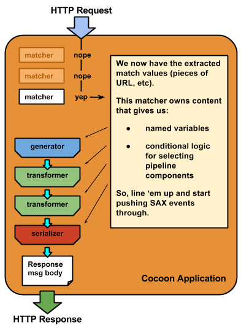
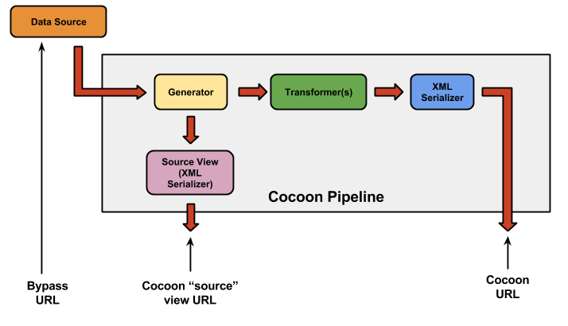

Cocoon and the Mediator
The Cocoon Application structure
Cocoon Request/Response Operation
Cocoon Request/Response Diagram
sitemap.xmap: the XML files that define the behavior of your Cocoon application
Pipeline beginning: the Generator
Pipeline inspection hatches: Views
The NGWMN Mediator is an Apache Cocoon 2.1 application.
Cocoon is not well understood in general at CIDA, and the specifics of how the Mediator uses Cocoon also need to be explicitly described.
Documentation is necessary, or else the Mediator is going to impose a high recurring cost on CIDA: historically, every time a developer has been assigned to this project, just getting up to speed has been a research project in its own right.
Hence this page. Please update it as appropriate.
Cocoon in general is described first. Then, the Mediator is described in terms of the general Cocoon description.
Apache Cocoon
Cocoon TL;DR
Cocoon is a simple idea: a declarative mapping between
- HTTP Request characteristics, and
- the actions taken to generate the corresponding HTTP Response.
The actions taken are, in Cocoon, implemented as processing pipelines. These pipelines are ordered sequences of
- data acquisition,
- processing, and
- serialization
actions that construct the HTTP Response to be returned. A pipeline may contain internal decision logic, which means that, although it's a sequence of steps at execution time, it's a tree structure in its definition.
Cocoon pipelines use SAX events, a design decision that favors run time efficiency and reduced memory footprint. Cocoon is intended primarily as a high-volume, high-speed request/response processing framework.
The Cocoon Application structure
Cocoon applications can be confusing to understand, because configuration, behavior, resources, and source code are all placed in a recursive folder structure.
- Folder scope is generally very strictly observed.
- General kinds of resources can be placed in various locations in the folder structure, which modifies their scope but does not modify their behavior.
- Some specific kinds of resources (particularly the ones that govern configuration & deployment) do have specific homes in the folder structure - normally the application root directory, or dedicated subdirectories such as WEB-INF.
- However, it's typical that a Cocoon application's behavior is recursively defined by elaborating the folder structure. This can get complicated rather quickly, especially if the application's designers chose a highly distributed strategy.
- Therefore, the very first step in learning a Cocoon application is to understand the folder structure.
- And, if it's not clearly documented, you have a research project on your hands.

Cocoon Request/Response Operation
A Cocoon application unit of work is a single HTTP Request.
(Well, yes. It's a... web app.)
Depending on the match characteristics of the Request, work is assigned to a single pipeline. (Note: pipeline definitions, including matchers, are found in the sitemap.xmap file (described below). For a given Request URL, the matchers in the most local sitemap are evaluated in document order.
Cocoon Request/Response Diagram
This is an extremely simplified, but still conceptually correct, diagram of how Cocoon handles an HTTP Request.
Review it. Seriously, it will make everything else easier to follow.

There is one kind of file that governs the behavior shown in the preceding diagram: sitemap.xmap.
sitemap.xmap: the XML files that define the behavior of your Cocoon application
A sitemap.xmap file defines
- Views
- Matchers, and, on a per-matcher basis:
- Variable declaration/assignment (note that, as is the case in XSLT, "variables" ain't actually variable. They are assigned at run time, but immutable.)
- A complete set of pipeline decision/definition logic statements. Decisions can depend on:
- Matcher captured data (mainly, segments of Request URLs); matchers capture just like regexs do.
- Variable values.
- Named Request parameters
All of the conditional logic structures will resolve to:
- A child conditional logic structure, or
- A Pipeline operational component.
- Various other code you probably won't care about, and won't have difficulty figuring out if you need to.
All in all, remember this:
All of your sitemap.xmap files, taken together, define the application logic.
sitemap.xmap does some other things (like setting up debugging and testing logic, because it's too sane and handy to do it there), but if you want to know about application behavior, your mantra in Cocoon should always be "It's all about the sitemap.xmap files."
sitemap.xmap syntax consists of three kinds of logical component:
- Request matchers, which are tested against the incoming HTTP Request. Mostly they are URL pattern matchers; but they can also match on the presence or value of request parameters.
- Conditional logic flow control, which evaluates various observable properties at run time.
- Pipelines (and Views), which are the sequences of operations that result in a serialized output to be returned in the message body of an HTTP Response.
Cocoon Pipelines
A "pipeline" is an ordered sequence of discrete steps:
- exactly one generator, which initializes the data process by emitting source data as SAX events.
- 0-n transformers, which consume SAX events and emit other SAX events.
- xactly one serializer, which creates content suitable for the outgoing HTTP Response message body.
A pipeline may also contain
instructions for activating views, which permit alternate representations of the pipeline's content somewhere along the line, usually for troubleshooting purposes.
Note that although a Pipeline is an ordered sequence of action, its definition is, generally speaking, a reentrant tree, because of the conditional logic.
Note also that it is completely OK to define a pipeline with nested matchers. You can read the Cocoon documentation until the cows come home and you won't actually find that mentioned. (True story: I was refactoring the Mediator's sitemap.xmap, and feeling frustrated because the refactoring was topologically inconsistent with the application URL structure. "This might not work. Why couldn't I just nest matchers??" I snarled. Then I thought, "Wait. What if I can nest matchers?" I could, and I did, and it worked great. So, now you don't need to endure that. Moral of the story: the Cocoon documentation, while admirably clear in many respects, omits some very helpful, and in retrospect completely obvious, clarifications. Don't hesitate to try something just because it's not described or shown.)
Pipeline beginning: the Generator
A generator has one specific responsibility: to emit data as SAX events.
The presumption is that a generator is obtaining XML data from an external source - e.g., a web service - and then parsing it; but a custom-built generator can also be receiving prebuilt SAX events from some upstream source, or providing static data for test purposes. The point is, the generator will always emit SAX events and nothing else.
Out of the box, generators come in two basic flavors:
- map:generator is as vanilla as it gets. This is typically a call to a single data source, in which the returned content is XML structured by the source. The map:generator turns the XML into SAX events.
- map:aggregator is a little more complicated, but not much. The map:aggregator obtains content from multiple sources, and wraps the multiple content nodes in a single enclosing element. This element's tagname is specified in the pipeline definition. This can cause some unexpected behaviors in downstream XSLT or XQuery or whatever. You have been warned.
Pipeline middle: Transformers
The transformers are an ordered sequence of data transformations (including computations, calculations, inclusion of contingent content, sorting, filtering, etc). These are commonly written as XSLT transformations. Cocoon is also capable of invoking an XQuery application for executing really complex logic, but that's pretty rare (and doesn't occur in the NGWMN Mediator AFAIK.)
It is common for the XSLT files to be stored in the Cocoon application folder structure at an appropriate scope. Some XSLTs are very specific to a particular logical case; others are shared resources used in multiple cases.
Pipeline end: the Serializer
The final step is an output step, normally a serialization to a wire format suitable for an HTTP message body. The serializer is ordinarily (and in the case of the NGWMN Mediator, always) an XML writer. It can, however, be a custom-built output formatter that creates such outputs as tabular CSV/TSV, JSON, etc.
Pipeline inspection hatches: Views
A view is primarily a way of inspecting the content of the pipeline at some intermediate point. The usefulness of this is pretty obvious: it's very handy to be able to inspect various inputs and outputs if you're trying to diagnose a bug, or inspect the anticipated input to an XSLT, or something like that.
A view is simply a short-cut to a serializer that is invoked at a specific place in the pipeline. Views are invoked by adding a reserved "cocoon-view" request parameter to the Request URL. The value of the cocoon-view request parameter is the name of the view, as defined in sitemap.xmap.
The Mediator
Particulars of the Mediator/Hub Cocoon Application
Fortunately, the Mediator's behavior is not defined in multiple places. There is one specific sitemap.xmap that governs the Mediator Hub. All of the application logic is there.
This application definition sitemap.xmap is Path redacted (You may now perform your Happy Dance for up to two minutes, because I just saved you a great deal of research.) As a general rule, all Mediator control logic can be found in that single sitemap.xmap. You will not need to look elsewhere unless your task involves more unusual configuration or definition work.
The GWDP Mediator pipelines are pretty straightforward. They, and their data, are accessible via three URLs with different jobs.
NGWMN Mediator: data access diagram

- The Cocoon URL requests the actual work result.
- How do I know what the URL is?
- The Source View URL requests the output of the generator.
- How do I know what the URL is?
- Exactly the same as the Cocoon URL for the given agency, service, and feature; except that you add the magical URL parameter cocoon-view=source. That dumps the Generator's output out directly to a serializer.
- How do I know what the URL is?
- The Bypass URL is the actual source of the data from the cooperating agency.
- How do I know what the URL is?
- You have to look it up in sitemap.xmap, and work out how to create the URL for the given agency, service, feature_id. Sorry there's not a more general answer; but each agency/service combination is, in principle, idiosyncratic in its service definition. It's not too hard to do, though, except for the GeoServer-hosted remote stuff, which is confusing and fragile due to nested URL parameters.
- How do I know what the URL is?